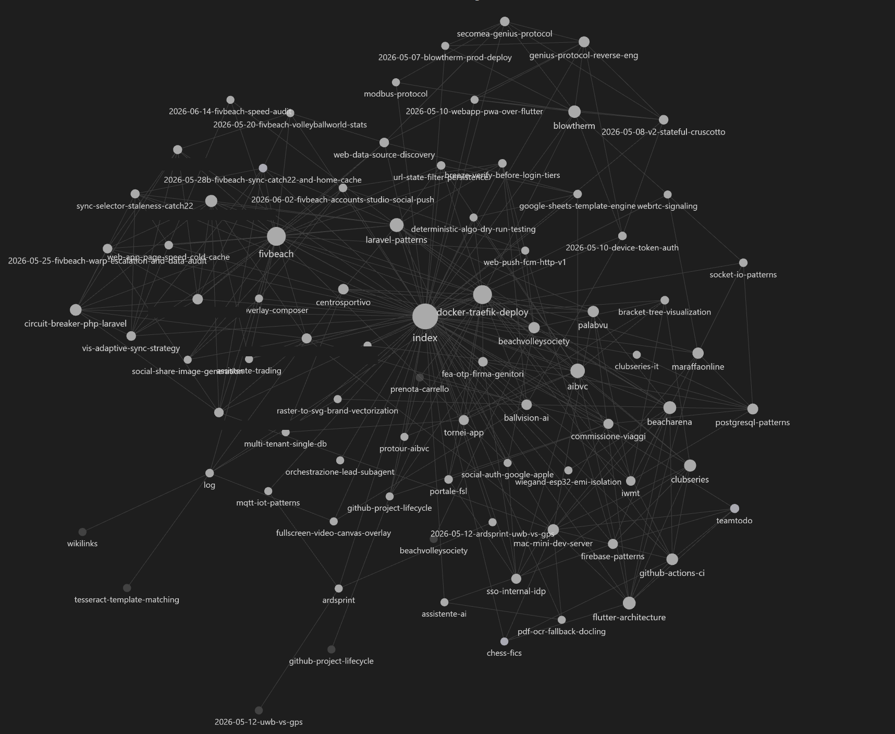

<!DOCTYPE html>
<html lang="it">
<head>
  <meta charset="UTF-8">
  <meta name="viewport" content="width=device-width, initial-scale=1.0">
  <title>Atto 3 - Le tre storie</title>
  <link rel="preconnect" href="https://fonts.googleapis.com">
  <link rel="preconnect" href="https://fonts.gstatic.com" crossorigin>
  <link href="https://fonts.googleapis.com/css2?family=Fraunces:opsz,wght@9..144,300;9..144,500;9..144,600;9..144,700;9..144,900&family=Public+Sans:wght@400;500;600;700&family=IBM+Plex+Mono:wght@400;500;600&display=swap" rel="stylesheet">
  <script src="https://unpkg.com/react@18/umd/react.production.min.js"></script>
  <script src="https://unpkg.com/react-dom@18/umd/react-dom.production.min.js"></script>
  <script src="https://unpkg.com/@babel/standalone/babel.min.js"></script>
  <style>
    * { margin: 0; padding: 0; box-sizing: border-box; }
    :root {
      --bg: #15120f;
      --bg-card: #1e1a15;
      --bg-light: #29231d;
      --border: #3c332a;
      --text: #f4eee3;
      --text-dim: #d2c8b8;
      --text-muted: #a89a83;
      --success: #6fae5c;
      --danger: #e0563a;
      --warn: #d9a441;
      --info: #4e93b8;
      --purple: #a879c4;
      --fs-xs: clamp(13px, 0.7vw + 11px, 14px);
      --fs-sm: clamp(15px, 0.8vw + 12px, 16px);
      --fs-body: clamp(17px, 1vw + 13px, 19px);
      --fs-lead: clamp(19px, 1.3vw + 14px, 22px);
      --fs-h3: clamp(20px, 1.6vw + 14px, 26px);
      --fs-h2: clamp(26px, 2.4vw + 16px, 36px);
      --fs-h1: clamp(34px, 5vw + 18px, 58px);
      --fs-display: clamp(44px, 7vw + 20px, 84px);
      --lh-body: 1.65;
      --lh-heading: 1.18;
    }
    body { background: var(--bg); color: var(--text); font-family: 'Public Sans', sans-serif; }
    #root { min-height: 100vh; }
    a { color: inherit; }
    h2, h3 { font-family: 'Public Sans', sans-serif; font-weight: 600; }
    p, li { line-height: var(--lh-body); }
    @keyframes pulseBug {
      0%, 100% { opacity: 1; }
      50% { opacity: 0.4; }
    }
    .lang-toggle { display: flex; font-family: 'IBM Plex Mono', monospace; font-size: var(--fs-xs); font-weight: 600; border: 1px solid var(--border); border-radius: 4px; overflow: hidden; flex-shrink: 0; }
    .lang-toggle button { padding: 5px 9px; background: transparent; border: none; cursor: pointer; color: var(--text-muted); }
    .lang-toggle button + button { border-left: 1px solid var(--border); }
    .lang-toggle button.active { background: var(--warn); color: var(--bg); }
    @media (max-width: 768px) {
      .slide-content { padding: 16px !important; }
      .slide-content > div { padding: 20px 16px !important; }
      .top-bar { padding: 0 12px !important; }
      .top-bar span { font-size: var(--fs-xs) !important; }
      .bottom-bar { gap: 8px !important; }
      .bottom-bar button, .bottom-bar a { padding: 10px 16px !important; font-size: var(--fs-xs) !important; }
      svg { max-width: 100%; height: auto; }
      .bug-grid { grid-template-columns: 1fr !important; }
      .wiki-grid { grid-template-columns: 1fr !important; }
      .stat-row { flex-direction: column !important; }
    }
    @media (max-width: 480px) {
      .top-bar > div:first-child span:nth-child(4) { display: none; }
    }
  </style>
</head>
<body>
  <div id="root"></div>
  <script type="text/babel">
    const { useState, useEffect } = React;

    const colors = {
      bg: '#15120f', bgCard: '#1e1a15', bgLight: '#29231d',
      accent: '#d1603d', accentAlt: '#e88f6c',
      text: '#f4eee3', textDim: '#d2c8b8', textMuted: '#a89a83',
      border: '#3c332a',
      success: '#6fae5c', danger: '#e0563a', warn: '#d9a441', info: '#4e93b8', purple: '#a879c4'
    };

    function getLang() {
      const params = new URLSearchParams(window.location.search);
      const urlLang = params.get('lang');
      if (urlLang === 'en' || urlLang === 'it') { localStorage.setItem('kbLang', urlLang); return urlLang; }
      const stored = localStorage.getItem('kbLang');
      if (stored === 'en' || stored === 'it') return stored;
      return 'it';
    }

    const PREV_ACT_HREF = 'atto2-larchitettura.html';
    const NEXT_ACT_HREF = 'atto4-la-macchina.html';

    const BgTexture = () => (
      <div style={{ position: 'fixed', inset: 0, pointerEvents: 'none', zIndex: 0, opacity: 0.05, backgroundImage: "url(\"data:image/svg+xml,%3Csvg xmlns='http://www.w3.org/2000/svg' width='120' height='120'%3E%3Cfilter id='n'%3E%3CfeTurbulence type='fractalNoise' baseFrequency='0.9' numOctaves='2' stitchTiles='stitch'/%3E%3C/filter%3E%3Crect width='100%25' height='100%25' filter='url(%23n)'/%3E%3C/svg%3E\")" }} />
    );

    const Box = ({ type = 'info', title, children }) => {
      const cfg = { info: { c: colors.info, i: 'ℹ️' }, warn: { c: colors.warn, i: '⚠️' }, danger: { c: colors.danger, i: '🛑' }, tip: { c: colors.purple, i: '💡' }, success: { c: colors.success, i: '✓' } };
      const { c, i } = cfg[type];
      return (
        <div style={{ background: c + '15', border: `1px solid ${c}40`, borderLeft: `4px solid ${c}`, borderRadius: '0 4px 4px 0', padding: '18px 22px', margin: '16px 0' }}>
          {title && <div style={{ display: 'flex', alignItems: 'center', gap: '8px', marginBottom: '8px', fontWeight: '600', fontSize: 'var(--fs-body)', color: c }}>{i} {title}</div>}
          <div style={{ color: colors.textDim, lineHeight: 'var(--lh-body)', fontSize: 'var(--fs-body)' }}>{children}</div>
        </div>
      );
    };

    const Glow = ({ children, color = colors.accent }) => (
      <div style={{ position: 'relative', padding: '2px', borderRadius: '12px', background: `linear-gradient(135deg, ${color}40, transparent, ${color}20)` }}>
        <div style={{ background: colors.bgCard, borderRadius: '10px', padding: '24px' }}>{children}</div>
      </div>
    );

    const StatBlock = ({ value, label, color }) => (
      <div style={{ textAlign: 'center', padding: '20px 26px', background: colors.bgCard, border: `1px solid ${colors.border}`, borderRadius: '12px', minWidth: '130px' }}>
        <div style={{ fontSize: 'var(--fs-h1)', fontWeight: '700', color: color || colors.accent, fontFamily: 'Fraunces, serif' }}>{value}</div>
        <div style={{ fontSize: 'var(--fs-xs)', color: colors.textMuted, textTransform: 'uppercase', letterSpacing: '1px', marginTop: '6px', fontFamily: "'IBM Plex Mono', monospace" }}>{label}</div>
      </div>
    );

    // ---------- Componente "spot the bug" ----------
    const codeBoxStyle = { background: colors.bg, borderRadius: '8px', border: `1px solid ${colors.border}`, overflow: 'hidden' };
    const preStyle = { margin: 0, padding: '16px', fontFamily: "'IBM Plex Mono', monospace", fontSize: 'var(--fs-sm)', lineHeight: '1.7', color: colors.text, overflowX: 'auto' };

    const SpotTheBug = ({ t }) => {
      const [revealed, setRevealed] = useState(false);

      const backslashStyle = {
        color: colors.text,
        background: revealed ? colors.danger : 'transparent',
        fontWeight: revealed ? '700' : '400',
        padding: revealed ? '0 2px' : '0',
        borderRadius: '3px',
        animation: revealed ? 'pulseBug 0.9s infinite' : 'none'
      };

      return (
        <div>
          <div className="bug-grid" style={{ display: 'grid', gridTemplateColumns: '1fr 1fr', gap: '20px' }}>
            <div style={{ minWidth: 0 }}>
              <div style={{ color: colors.success, fontWeight: '600', marginBottom: '10px', fontSize: 'var(--fs-sm)' }}>{t.bug_left_label}</div>
              <div style={codeBoxStyle}>
                <pre style={preStyle}>{'---\nname: reviewer\ndescription: Code review, debug e QA\n---'}</pre>
              </div>
            </div>
            <div style={{ minWidth: 0 }}>
              <div style={{ color: colors.danger, fontWeight: '600', marginBottom: '10px', fontSize: 'var(--fs-sm)' }}>{t.bug_right_label}</div>
              <div style={codeBoxStyle}>
                <pre style={preStyle}>
                  <span style={backslashStyle}>{'\\'}</span>{'---\n'}
                  {'name: reviewer\ndescription: Code review, debug e QA\n'}
                  <span style={backslashStyle}>{'\\'}</span>{'---'}
                </pre>
              </div>
            </div>
          </div>
          <div style={{ textAlign: 'center', margin: '24px 0' }}>
            <button onClick={() => setRevealed(true)} style={{ padding: '12px 26px', minHeight: '44px', background: revealed ? colors.bgLight : colors.danger, border: 'none', borderRadius: '6px', color: revealed ? colors.textMuted : colors.text, cursor: revealed ? 'default' : 'pointer', fontSize: 'var(--fs-sm)', fontWeight: '600' }}>{t.bug_button}</button>
          </div>
          {revealed && (
            <Box type="danger" title={t.bug_box_title}>
              {t.bug_box_body1}<strong style={{ color: colors.text }}>{t.bug_box_strong1}</strong>{t.bug_box_body2}<strong style={{ color: colors.text }}>{t.bug_box_strong2}</strong>{t.bug_box_body3}<strong style={{ color: colors.text }}>{t.bug_box_strong3}</strong>{t.bug_box_body4}
            </Box>
          )}
          <p style={{ color: colors.textDim, fontSize: 'var(--fs-body)', lineHeight: 'var(--lh-body)', marginTop: '16px' }}>
            {t.bug_para}
          </p>
        </div>
      );
    };

    const slides = [
      // 3.1 - Titolo atto
      (t) => (
        <div style={{ textAlign: 'center', padding: '60px 30px', display: 'flex', flexDirection: 'column', alignItems: 'center', justifyContent: 'center', minHeight: '70vh' }}>
          <div style={{ fontSize: 'clamp(40px, 8vw, 56px)', marginBottom: '20px' }}>📖</div>
          <div style={{ fontSize: 'var(--fs-xs)', color: colors.accent, textTransform: 'uppercase', letterSpacing: '3px', marginBottom: '16px', fontFamily: "'IBM Plex Mono', monospace" }}>{t.actLabel}</div>
          <h1 style={{ fontSize: 'var(--fs-h1)', fontFamily: 'Fraunces, serif', fontWeight: '600', lineHeight: 'var(--lh-heading)', background: `linear-gradient(135deg, ${colors.accent}, ${colors.accentAlt})`, WebkitBackgroundClip: 'text', WebkitTextFillColor: 'transparent', marginBottom: '20px' }}>{t.actTitle}</h1>
          <p style={{ fontSize: 'var(--fs-lead)', color: colors.textDim, maxWidth: '560px', lineHeight: 'var(--lh-body)' }}>{t.s1_lead}</p>
        </div>
      ),

      // 3.2 - Storia 1 parte 1
      (t) => (
        <div style={{ padding: '30px' }}>
          <div style={{ color: colors.textMuted, fontSize: 'var(--fs-xs)', textTransform: 'uppercase', letterSpacing: '2px', marginBottom: '10px', fontFamily: "'IBM Plex Mono', monospace" }}>{t.s2_eyebrow}</div>
          <h2 style={{ color: colors.accent, fontSize: 'var(--fs-h2)', fontWeight: '600', lineHeight: 'var(--lh-heading)', marginBottom: '24px', display: 'flex', alignItems: 'center', gap: '12px' }}>
            <span style={{ fontSize: '28px' }}>👻</span> {t.s2_h2}
          </h2>
          <Glow>
            <p style={{ color: colors.textDim, lineHeight: 'var(--lh-body)', fontSize: 'var(--fs-body)' }}>
              {t.s2_body}
            </p>
          </Glow>
          <Box type="warn">
            <div style={{ fontSize: 'var(--fs-h3)', fontWeight: '700', color: colors.text, textAlign: 'center', padding: '8px 0' }}>{t.s2_box_pre}<span style={{ color: colors.danger }}>{t.s2_box_zero}</span></div>
          </Box>
        </div>
      ),

      // 3.3 - Storia 1 causa
      (t) => (
        <div style={{ padding: '30px' }}>
          <div style={{ color: colors.textMuted, fontSize: 'var(--fs-xs)', textTransform: 'uppercase', letterSpacing: '2px', marginBottom: '10px', fontFamily: "'IBM Plex Mono', monospace" }}>{t.s3_eyebrow}</div>
          <h2 style={{ color: colors.accent, fontSize: 'var(--fs-h2)', fontWeight: '600', lineHeight: 'var(--lh-heading)', marginBottom: '22px', display: 'flex', alignItems: 'center', gap: '12px' }}>
            <span style={{ fontSize: '28px' }}>🔎</span> {t.s3_h2}
          </h2>
          <SpotTheBug t={t} />
          <Box type="danger">
            <strong style={{ color: colors.text }}>{t.s3_danger}</strong>
          </Box>
        </div>
      ),

      // 3.4 - Storia 1 lezione
      (t) => (
        <div style={{ padding: '30px' }}>
          <div style={{ color: colors.textMuted, fontSize: 'var(--fs-xs)', textTransform: 'uppercase', letterSpacing: '2px', marginBottom: '10px', fontFamily: "'IBM Plex Mono', monospace" }}>{t.s4_eyebrow}</div>
          <h2 style={{ color: colors.accent, fontSize: 'var(--fs-h2)', fontWeight: '600', lineHeight: 'var(--lh-heading)', marginBottom: '24px', display: 'flex', alignItems: 'center', gap: '12px' }}>
            <span style={{ fontSize: '28px' }}>🧪</span> {t.s4_h2}
          </h2>
          <Glow>
            <p style={{ color: colors.textDim, lineHeight: 'var(--lh-body)', fontSize: 'var(--fs-body)' }}>
              {t.s4_body}
            </p>
          </Glow>
          <ul style={{ color: colors.textDim, lineHeight: '1.9', paddingLeft: '22px', fontSize: 'var(--fs-body)', marginTop: '18px' }}>
            <li>{t.s4_li1}</li>
            <li>{t.s4_li2}</li>
            <li>{t.s4_li3}</li>
          </ul>
        </div>
      ),

      // 3.5 - Storia 2
      (t) => (
        <div style={{ padding: '30px' }}>
          <div style={{ color: colors.textMuted, fontSize: 'var(--fs-xs)', textTransform: 'uppercase', letterSpacing: '2px', marginBottom: '10px', fontFamily: "'IBM Plex Mono', monospace" }}>{t.s5_eyebrow}</div>
          <h2 style={{ color: colors.accent, fontSize: 'var(--fs-h2)', fontWeight: '600', lineHeight: 'var(--lh-heading)', marginBottom: '24px', display: 'flex', alignItems: 'center', gap: '12px' }}>
            <span style={{ fontSize: '28px' }}>🕵️</span> {t.s5_h2}
          </h2>
          <Glow>
            <p style={{ color: colors.textDim, lineHeight: 'var(--lh-body)', fontSize: 'var(--fs-body)' }}>
              {t.s5_body1}<strong style={{ color: colors.text }}>{t.s5_body_strong1}</strong>{t.s5_body2}<strong style={{ color: colors.text }}>{t.s5_body_strong2}</strong>{t.s5_body3}
            </p>
          </Glow>
          <Box type="success">
            <strong style={{ color: colors.text }}>{t.s5_success}</strong>
          </Box>
        </div>
      ),

      // 3.6 - La memoria vista dall'alto (la wiki reale)
      (t) => (
        <div style={{ padding: '30px' }}>
          <div style={{ color: colors.textMuted, fontSize: 'var(--fs-xs)', textTransform: 'uppercase', letterSpacing: '2px', marginBottom: '10px', fontFamily: "'IBM Plex Mono', monospace" }}>{t.s6_eyebrow}</div>
          <h2 style={{ color: colors.accent, fontSize: 'var(--fs-h2)', fontWeight: '600', lineHeight: 'var(--lh-heading)', marginBottom: '22px', display: 'flex', alignItems: 'center', gap: '12px' }}>
            <span style={{ fontSize: '28px' }}>🕸️</span> {t.s6_h2}
          </h2>
          <Glow>
            <p style={{ color: colors.textDim, lineHeight: 'var(--lh-body)', fontSize: 'var(--fs-body)' }}>
              {t.s6_glow}
            </p>
          </Glow>
          <div className="wiki-grid" style={{ display: 'grid', gridTemplateColumns: '1.15fr 1fr', gap: '24px', alignItems: 'center', margin: '18px 0' }}>
            <div style={{ border: `1px solid ${colors.border}`, borderRadius: '10px', overflow: 'hidden', lineHeight: 0 }}>
              
            </div>
            <ul style={{ color: colors.textDim, lineHeight: '1.8', paddingLeft: '20px', fontSize: 'var(--fs-sm)', margin: 0 }}>
              <li>{t.s6_li1}</li>
              <li>{t.s6_li2}</li>
              <li>{t.s6_li3}</li>
              <li>{t.s6_li4}</li>
            </ul>
          </div>
          <Box type="tip">
            <strong style={{ color: colors.text }}>{t.s6_tip}</strong>
          </Box>
        </div>
      ),

      // 3.7 - Storia 2 lezione
      (t) => (
        <div style={{ padding: '30px' }}>
          <div style={{ color: colors.textMuted, fontSize: 'var(--fs-xs)', textTransform: 'uppercase', letterSpacing: '2px', marginBottom: '10px', fontFamily: "'IBM Plex Mono', monospace" }}>{t.s7_eyebrow}</div>
          <h2 style={{ color: colors.accent, fontSize: 'var(--fs-h2)', fontWeight: '600', lineHeight: 'var(--lh-heading)', marginBottom: '24px', display: 'flex', alignItems: 'center', gap: '12px' }}>
            <span style={{ fontSize: '28px' }}>🗂️</span> {t.s7_h2}
          </h2>
          <ul style={{ color: colors.textDim, lineHeight: '1.9', paddingLeft: '22px', fontSize: 'var(--fs-body)' }}>
            <li>{t.s7_li1}</li>
            <li>{t.s7_li2}</li>
            <li>{t.s7_li3}</li>
          </ul>
          <Box type="info" title={t.s7_box_title}>
            {t.s7_box_body1}<strong style={{ color: colors.text }}>{t.s7_box_strong}</strong>{t.s7_box_body2}
          </Box>
          <div style={{ background: colors.bg, border: `1px solid ${colors.border}`, borderRadius: '8px', padding: '14px 18px', marginTop: '14px', fontFamily: "'IBM Plex Mono', monospace", fontSize: 'var(--fs-xs)', lineHeight: '2' }}>
            <div><span style={{ color: colors.warn }}>a3f9c1e</span> <span style={{ color: colors.textDim }}>{t.s7_commit1}</span></div>
            <div><span style={{ color: colors.warn }}>7bd21fa</span> <span style={{ color: colors.textDim }}>{t.s7_commit2}</span></div>
            <div><span style={{ color: colors.warn }}>c04e88b</span> <span style={{ color: colors.textDim }}>{t.s7_commit3}</span></div>
            <div><span style={{ color: colors.warn }}>158de2a</span> <span style={{ color: colors.textDim }}>{t.s7_commit4}</span></div>
          </div>
          <div style={{ color: colors.textMuted, fontSize: 'var(--fs-xs)', marginTop: '8px', textAlign: 'right' }}>{t.s7_caption}</div>
        </div>
      ),

      // 3.8 - Storia 3
      (t) => (
        <div style={{ padding: '30px' }}>
          <div style={{ color: colors.textMuted, fontSize: 'var(--fs-xs)', textTransform: 'uppercase', letterSpacing: '2px', marginBottom: '10px', fontFamily: "'IBM Plex Mono', monospace" }}>{t.s8_eyebrow}</div>
          <h2 style={{ color: colors.accent, fontSize: 'var(--fs-h2)', fontWeight: '600', lineHeight: 'var(--lh-heading)', marginBottom: '24px', display: 'flex', alignItems: 'center', gap: '12px' }}>
            <span style={{ fontSize: '28px' }}>🎭</span> {t.s8_h2}
          </h2>
          <Glow>
            <p style={{ color: colors.textDim, lineHeight: 'var(--lh-body)', fontSize: 'var(--fs-body)' }}>
              {t.s8_glow}
            </p>
          </Glow>
          <Box type="danger">
            {t.s8_danger}
          </Box>
          <p style={{ color: colors.textDim, lineHeight: 'var(--lh-body)', fontSize: 'var(--fs-body)' }}>
            {t.s8_para1}<em>{t.s8_para_em}</em>
          </p>
          <Box type="tip">
            {t.s8_tip}
          </Box>
        </div>
      ),

      // 3.9 - Storia 3 il caso reale
      (t) => (
        <div style={{ padding: '30px' }}>
          <div style={{ color: colors.textMuted, fontSize: 'var(--fs-xs)', textTransform: 'uppercase', letterSpacing: '2px', marginBottom: '10px', fontFamily: "'IBM Plex Mono', monospace" }}>{t.s9_eyebrow}</div>
          <h2 style={{ color: colors.accent, fontSize: 'var(--fs-h2)', fontWeight: '600', lineHeight: 'var(--lh-heading)', marginBottom: '24px', display: 'flex', alignItems: 'center', gap: '12px' }}>
            <span style={{ fontSize: '28px' }}>📋</span> {t.s9_h2}
          </h2>
          <Glow>
            <p style={{ color: colors.textDim, lineHeight: 'var(--lh-body)', fontSize: 'var(--fs-body)' }}>
              {t.s9_glow}
            </p>
          </Glow>
          <div className="stat-row" style={{ display: 'flex', gap: '18px', justifyContent: 'center', margin: '26px 0', flexWrap: 'wrap' }}>
            <StatBlock value="26" label={t.s9_stat1} color={colors.accent} />
            <StatBlock value="4" label={t.s9_stat2} color={colors.warn} />
            <StatBlock value="1" label={t.s9_stat3} color={colors.danger} />
          </div>
          <ul style={{ color: colors.textDim, lineHeight: '1.9', paddingLeft: '22px', fontSize: 'var(--fs-body)' }}>
            <li>{t.s9_li1}</li>
            <li>{t.s9_li2}</li>
            <li>{t.s9_li3}</li>
            <li>{t.s9_li4}</li>
          </ul>
          <Box type="success">
            {t.s9_success}
          </Box>
        </div>
      ),

      // 3.10 - Storia 3 lezione
      (t) => (
        <div style={{ padding: '30px' }}>
          <div style={{ color: colors.textMuted, fontSize: 'var(--fs-xs)', textTransform: 'uppercase', letterSpacing: '2px', marginBottom: '10px', fontFamily: "'IBM Plex Mono', monospace" }}>{t.s10_eyebrow}</div>
          <h2 style={{ color: colors.accent, fontSize: 'var(--fs-h2)', fontWeight: '600', lineHeight: 'var(--lh-heading)', marginBottom: '24px', display: 'flex', alignItems: 'center', gap: '12px' }}>
            <span style={{ fontSize: '28px' }}>🙋</span> {t.s10_h2}
          </h2>
          <ul style={{ color: colors.textDim, lineHeight: '1.9', paddingLeft: '22px', fontSize: 'var(--fs-body)' }}>
            <li>{t.s10_li1}</li>
            <li>{t.s10_li2}</li>
            <li>{t.s10_li3}</li>
          </ul>
          <svg viewBox="0 0 640 190" style={{ width: '100%', background: colors.bg, borderRadius: '8px', marginTop: '20px' }}>
            <rect x="20" y="30" width="180" height="70" fill={colors.bgLight} stroke={colors.border} strokeWidth="2" rx="8" />
            <text x="110" y="58" textAnchor="middle" fill={colors.textDim} fontSize="12" fontWeight="bold">{t.s10_svg_who_did}</text>
            <text x="110" y="82" textAnchor="middle" fill={colors.textMuted} fontSize="10">{t.s10_svg_its_done}</text>

            <line x1="200" y1="65" x2="255" y2="65" stroke={colors.textMuted} strokeWidth="2" />

            <rect x="265" y="30" width="180" height="70" fill={colors.bgLight} stroke={colors.warn} strokeWidth="2" rx="8" />
            <text x="355" y="58" textAnchor="middle" fill={colors.warn} fontSize="12" fontWeight="bold">{t.s10_svg_who_can}</text>
            <text x="355" y="82" textAnchor="middle" fill={colors.textMuted} fontSize="10">{t.s10_svg_checks}</text>

            <path d="M 445 100 C 445 150, 200 150, 155 100" fill="none" stroke={colors.danger} strokeWidth="2" strokeDasharray="6,4" />
            <text x="300" y="145" textAnchor="middle" fill={colors.danger} fontSize="10">{t.s10_svg_goes_back}</text>

            <line x1="445" y1="65" x2="500" y2="65" stroke={colors.textMuted} strokeWidth="2" />
            <rect x="510" y="30" width="110" height="70" fill={colors.bgLight} stroke={colors.success} strokeWidth="2" rx="8" />
            <text x="565" y="58" textAnchor="middle" fill={colors.success} fontSize="12" fontWeight="bold">{t.s10_svg_done}</text>
            <text x="565" y="82" textAnchor="middle" fill={colors.textMuted} fontSize="10">{t.s10_svg_for_real}</text>
          </svg>
        </div>
      ),
    ];

    const T = {
      it: {
        pageTitle: 'Atto 3 - Le tre storie',
        actLabel: 'Atto 3',
        actTitle: 'Le tre storie',
        prevActLabel: 'Atto 2',
        nextActLabel: 'Atto 4',
        navIndex: 'Indice',
        navBack: 'Indietro',
        navNext: 'Avanti',
        s1_lead: "Tre volte in cui il sistema ha fallito, ed è servito a qualcosa. Sono storie al passato: i numeri sono quelli di allora, fino alla v0.2.",
        s2_eyebrow: 'Storia 1 · parte 1',
        s2_h2: 'Per mesi ho creduto di avere 10 assistenti specializzati',
        s2_body: "Avevo costruito un pool di sotto-agenti specializzati: uno per il backend, uno per il frontend, uno per il database, uno per il deploy... dieci ruoli diversi, ognuno con le sue istruzioni. Per mesi ho lavorato convinto che il sistema li usasse davvero.",
        s2_box_pre: 'Sapete quanti ne funzionavano DAVVERO? ',
        s2_box_zero: 'Zero.',
        s3_eyebrow: 'Storia 1 · parte 2',
        s3_h2: 'Colpa di 4 caratteri',
        s3_danger: 'I sistemi falliscono in silenzio. "Sembra funzionare" e "funziona" sono due cose diverse.',
        s4_eyebrow: 'Storia 1 · lezione',
        s4_h2: 'Come controllate il vostro codice?',
        s4_body: "Vi è mai capitato di pensare che un pezzo di codice o una configurazione funzionasse solo perché non dava errori — magari proprio durante una verifica in laboratorio — e poi scoprire che non stava facendo niente di quello che pensavate?",
        s4_li1: 'Nessun errore ≠ funziona come deve',
        s4_li2: 'I sistemi automatici vanno controllati attivamente, non solo "lasciati andare"',
        s4_li3: 'Un controllo di salute (health-check) va fatto SUBITO dopo ogni modifica, non mesi dopo',
        s5_eyebrow: 'Storia 2',
        s5_h2: "Ho recuperato 3 mesi di lavoro perduto in un'ora",
        s5_body1: "Ricordate il bug ipotetico dell'Atto 1? Ecco la versione vera. Avevo lavorato per mesi su tanti progetti diversi senza tenere una traccia centrale — pensavo di aver perso il filo di cosa avevo fatto e imparato. Ma ogni sessione di lavoro con l'AI lascia un registro completo (i \"log\" della conversazione, i transcript). Ho lanciato ",
        s5_body_strong1: '10 agenti in parallelo',
        s5_body2: ', ognuno a leggere e riassumere un pezzo di quei registri, e in circa un\'ora ho ricostruito un censimento di ',
        s5_body_strong2: '15 progetti',
        s5_body3: ' che credevo di dover rifare da zero.',
        s5_success: 'I dati che credete persi spesso non lo sono. Bisogna sapere dove il sistema tiene le tracce.',
        s6_eyebrow: 'Storia 2 · dietro le quinte',
        s6_h2: 'La memoria vista dall\'alto',
        s6_glow: 'Questa è la mappa generata da Obsidian sulla mia wiki di lavoro.',
        s6_img_alt: "Mappa a grafo della wiki di conoscenza: ogni punto è una pagina, i grappoli sono progetti, l'hub centrale è l'indice e i concetti trasversali",
        s6_li1: 'Ogni puntino è una pagina di conoscenza: un progetto, un concetto, una lezione, una decisione',
        s6_li2: 'La dimensione del puntino dice quanti collegamenti ha',
        s6_li3: 'I grappoli sono i progetti, con le loro lezioni intorno',
        s6_li4: "Il grande hub al centro è l'indice e i concetti trasversali (il deploy, per dire) che collegano tutto",
        s6_tip: 'Ogni sessione aggiunge puntini e fili. La conoscenza non è una lista: è una rete.',
        s7_eyebrow: 'Storia 2 · lezione',
        s7_h2: 'Dove tengono le tracce i VOSTRI sistemi?',
        s7_li1: 'Prima di rifare qualcosa da zero, chiedetevi: "esiste già un log o una traccia di questo?"',
        s7_li2: 'I log non sono solo per il debug — sono memoria che potete rileggere',
        s7_li3: 'Parallelizzare la ricerca (10 letture insieme invece che una alla volta) fa risparmiare ore, non minuti',
        s7_box_title: 'Anche questo lascia tracce',
        s7_box_body1: 'Ogni operazione sulla wiki e sulla KB è un ',
        s7_box_strong: 'commit git',
        s7_box_body2: ', con una descrizione. Lo storico dei commit è un diario di bordo che racconta come la conoscenza si è evoluta nel tempo — "git log come diario di bordo".',
        s7_commit1: 'kb: 6 project-memories nuove',
        s7_commit2: 'wiki: censimento completo dei 15 progetti',
        s7_commit3: 'agents: frontmatter su 12 subagent (allora)',
        s7_commit4: 'wiki: aggiunta lezione — health-check dopo ogni deploy',
        s7_caption: '(esempio ricostruito)',
        s8_eyebrow: 'Storia 3',
        s8_h2: "Il direttore che sbagliava, e chi l'ha corretto",
        s8_glow: "Il primo vero collaudo del sistema di orchestrazione è arrivato con il rilascio della versione v0.2 del toolkit. Il direttore che pianifica e delega (il lead, cioè Claude stesso) aveva scritto un documento che spiegava come funziona il sistema multi-agente. Dentro c'era una frase sbagliata, presentata con sicurezza come se fosse un limite tecnico del sistema.",
        s8_danger: '«Un subagent non può delegare ad altri subagent» — scritto come un limite tecnico. Non lo era.',
        s8_para1: 'A smentirla è stato il controllore (reviewer), che è esso stesso un subagent, nel modo più elegante possibile: ha fatto notare di avere lui stesso, tra i propri strumenti, quello di delega. ',
        s8_para_em: '"Falso: io posso delegare. Eccone la prova: guardate i miei strumenti."',
        s8_tip: 'La regola è stata riscritta: non un limite tecnico, ma una scelta di progetto — tenere la delega piatta evita di moltiplicare i costi e di far perdere il controllo al direttore. Corretta in tutti i punti dove compariva, e la correzione è documentata pubblicamente.',
        s9_eyebrow: 'Storia 3 · il caso reale',
        s9_h2: 'Il collaudo della versione v0.2',
        s9_glow: 'Ecco il caso concreto in cui è successo tutto questo: il rilascio v0.2 del toolkit, passato per intero dal controllore (reviewer) prima di essere pubblicato.',
        s9_stat1: 'Errori trovati',
        s9_stat2: 'Bloccanti',
        s9_stat3: 'Scritto dal lead',
        s9_li1: 'Path personali residui nei file',
        s9_li2: 'Una porta SSH dimenticata in una skill',
        s9_li3: 'Il claim falso sulla delega tra subagent',
        s9_li4: "La descrizione di un agente che prometteva competenze (PostgreSQL/Firestore) mai implementate nel corpo del file",
        s9_success: 'Tutti corretti prima di pubblicare: il controllo del reviewer ha impedito 4 figuracce pubbliche.',
        s10_eyebrow: 'Storia 3 · lezione',
        s10_h2: 'Fatevi controllare da chi PUÒ dirvi che sbagliate',
        s10_li1: "Nessun lavoro è finito solo perché lo dice chi l'ha fatto",
        s10_li2: 'Il controllo vale di più se chi controlla può davvero contraddirti (non un sì-uomo)',
        s10_li3: "Sbagliare in pubblico e correggersi vale più che sembrare infallibili — vale per un sistema AI e vale per una verifica di laboratorio con la vostra firma sopra",
        s10_svg_who_did: 'Chi ha fatto il lavoro',
        s10_svg_its_done: '"È fatto."',
        s10_svg_who_can: 'Chi PUÒ contraddire',
        s10_svg_checks: 'verifica sul serio',
        s10_svg_goes_back: '✗ torna indietro, si rifà',
        s10_svg_done: '✓ Finito',
        s10_svg_for_real: 'davvero',
        bug_left_label: '✓ Quello che doveva esserci',
        bug_right_label: "✗ Quello che c'era davvero",
        bug_button: '🔍 Trova la differenza',
        bug_box_title: 'Il bug',
        bug_box_body1: 'Dove dovevano esserci 3 caratteri (',
        bug_box_strong1: '---',
        bug_box_body2: ") ce n'erano 4: ",
        bug_box_strong2: '\\---',
        bug_box_body3: ', con un ',
        bug_box_strong3: '\\',
        bug_box_body4: ' di troppo davanti — sia nella riga di apertura sia in quella di chiusura. Un editor di testo aveva "protetto" il markdown senza che nessuno se ne accorgesse.',
        bug_para: 'Quel file definisce un agente per Claude Code. Senza quelle tre righe scritte esattamente così (frontmatter YAML valido), il file è invisibile per il sistema — non dà nessun errore, semplicemente non viene mai usato. 2 agenti avevano questo problema; altri 8 non avevano nemmeno provato ad avere quelle righe.',
      },
      en: {
        pageTitle: 'Act 3 - The three stories',
        actLabel: 'Act 3',
        actTitle: 'The three stories',
        prevActLabel: 'Act 2',
        nextActLabel: 'Act 4',
        navIndex: 'Index',
        navBack: 'Back',
        navNext: 'Next',
        s1_lead: 'Three times the system failed, and it was worth something. These are stories in the past tense: the numbers are the ones from back then, up to v0.2.',
        s2_eyebrow: 'Story 1 · part 1',
        s2_h2: 'For months I believed I had 10 specialized assistants',
        s2_body: 'I had built a pool of specialized subagents: one for the backend, one for the frontend, one for the database, one for deploy... ten different roles, each with its own instructions. For months I worked convinced the system actually used them.',
        s2_box_pre: 'How many actually worked? ',
        s2_box_zero: 'Zero.',
        s3_eyebrow: 'Story 1 · part 2',
        s3_h2: 'Four characters to blame',
        s3_danger: 'Systems fail silently. "Looks like it works" and "it works" are two different things.',
        s4_eyebrow: 'Story 1 · lesson',
        s4_h2: 'How do you check your own code?',
        s4_body: 'Has this ever happened to you: you think a piece of code or a configuration works just because it throws no errors, maybe right during a lab check, and then you find out it was not doing anything you thought it was?',
        s4_li1: 'No error ≠ works the way it should',
        s4_li2: 'Automated systems need active checking, not just being left to run',
        s4_li3: 'A health-check needs to happen RIGHT AFTER every change, not months later',
        s5_eyebrow: 'Story 2',
        s5_h2: 'I recovered 3 months of lost work in an hour',
        s5_body1: 'Remember the hypothetical bug from Act 1? Here is the real version. I had worked for months across many different projects without keeping a central record: I thought I had lost track of what I had done and learned. But every working session with the AI leaves a complete log (the conversation "logs", the transcripts). I launched ',
        s5_body_strong1: '10 agents in parallel',
        s5_body2: ', each reading and summarizing a slice of those logs, and in about an hour I rebuilt a census of ',
        s5_body_strong2: '15 projects',
        s5_body3: ' I thought I would have to redo from scratch.',
        s5_success: 'The data you think is lost is often not. You just need to know where the system keeps its traces.',
        s6_eyebrow: 'Story 2 · behind the scenes',
        s6_h2: 'The memory seen from above',
        s6_glow: 'This is the map Obsidian generated from my working wiki.',
        s6_img_alt: 'Graph map of the knowledge wiki: each dot is a page, the clusters are projects, the central hub is the index and the cross-cutting concepts',
        s6_li1: 'Every dot is a knowledge page: a project, a concept, a lesson, a decision',
        s6_li2: 'The size of the dot shows how many links it has',
        s6_li3: 'The clusters are the projects, with their lessons around them',
        s6_li4: 'The big hub at the center is the index and the cross-cutting concepts (deploy, for instance) that connect everything',
        s6_tip: 'Every session adds dots and threads. Knowledge is not a list: it is a network.',
        s7_eyebrow: 'Story 2 · lesson',
        s7_h2: 'Where do YOUR systems keep their traces?',
        s7_li1: 'Before redoing something from scratch, ask yourself: "is there already a log or a trace of this?"',
        s7_li2: 'Logs are not just for debugging: they are memory you can read back',
        s7_li3: 'Parallelizing the search (10 reads at once instead of one at a time) saves hours, not minutes',
        s7_box_title: 'This leaves traces too',
        s7_box_body1: 'Every operation on the wiki and the KB is a ',
        s7_box_strong: 'git commit',
        s7_box_body2: ', with a description. The commit history is a logbook that tells how the knowledge evolved over time: "git log as a logbook".',
        s7_commit1: 'kb: 6 new project-memories',
        s7_commit2: 'wiki: full census of the 15 projects',
        s7_commit3: 'agents: frontmatter on 12 subagents (back then)',
        s7_commit4: 'wiki: added lesson — health-check after every deploy',
        s7_caption: '(reconstructed example)',
        s8_eyebrow: 'Story 3',
        s8_h2: 'The conductor who got it wrong, and who corrected it',
        s8_glow: 'The first real test of the orchestration system came with the release of toolkit version v0.2. The conductor that plans and delegates (the lead, that is Claude itself) had written a document explaining how the multi-agent system works. It contained a wrong claim, presented with confidence as if it were a technical limit of the system.',
        s8_danger: '"A subagent cannot delegate to other subagents." Written up as a technical limit. It was not one.',
        s8_para1: 'It was disproven by the reviewer, itself a subagent, in the most elegant way possible: it pointed out that delegation was right there among its own tools. ',
        s8_para_em: '"False: I can delegate. Here is the proof, look at my tools."',
        s8_tip: "The rule got rewritten: not a technical limit, but a design choice. Keeping delegation flat avoids multiplying costs and losing the lead's control. It was fixed everywhere it appeared, and the fix is documented publicly.",
        s9_eyebrow: 'Story 3 · the real case',
        s9_h2: 'Testing version v0.2',
        s9_glow: 'Here is the concrete case where all this happened: the v0.2 release of the toolkit, which went through the reviewer in full before being published.',
        s9_stat1: 'Findings',
        s9_stat2: 'Blocking',
        s9_stat3: 'Written by the lead',
        s9_li1: 'Leftover personal paths in the files',
        s9_li2: 'An SSH port left behind in a skill',
        s9_li3: 'The false claim about delegation between subagents',
        s9_li4: 'An agent description promising skills (PostgreSQL/Firestore) never actually implemented in the file',
        s9_success: "All fixed before publishing: the reviewer's check prevented 4 public embarrassments.",
        s10_eyebrow: 'Story 3 · lesson',
        s10_h2: 'Get checked by someone who CAN tell you you are wrong',
        s10_li1: 'No work is done just because the person who did it says so',
        s10_li2: 'A check is worth more if whoever does it can actually contradict you (not a yes-man)',
        s10_li3: 'Being wrong in public and correcting it is worth more than looking infallible. It applies to an AI system, and it applies to a lab report with your name on it.',
        s10_svg_who_did: 'Whoever did the work',
        s10_svg_its_done: '"It\'s done."',
        s10_svg_who_can: 'Whoever CAN contradict',
        s10_svg_checks: 'checks for real',
        s10_svg_goes_back: '✗ goes back, gets redone',
        s10_svg_done: '✓ Done',
        s10_svg_for_real: 'for real',
        bug_left_label: '✓ What was supposed to be there',
        bug_right_label: '✗ What was actually there',
        bug_button: '🔍 Find the difference',
        bug_box_title: 'The bug',
        bug_box_body1: 'Where there should have been 3 characters (',
        bug_box_strong1: '---',
        bug_box_body2: '), there were 4: ',
        bug_box_strong2: '\\---',
        bug_box_body3: ', with one extra ',
        bug_box_strong3: '\\',
        bug_box_body4: ' in front, both on the opening line and the closing one. A text editor had "protected" the markdown without anyone noticing.',
        bug_para: 'That file defines an agent for Claude Code. Without those three lines written exactly like that (valid YAML frontmatter), the file is invisible to the system: it throws no error, it simply never gets used. 2 agents had this problem; another 8 had not even tried to have those lines.',
      }
    };

    function App() {
      const [current, setCurrent] = useState(0);
      const [lang, setLang] = useState(getLang());
      const total = slides.length;
      const t = T[lang];

      const next = () => setCurrent(c => Math.min(c + 1, total - 1));
      const prev = () => setCurrent(c => Math.max(c - 1, 0));
      const switchLang = (l) => {
        localStorage.setItem('kbLang', l);
        setLang(l);
        const url = new URL(window.location.href);
        if (l === 'en') url.searchParams.set('lang', 'en'); else url.searchParams.delete('lang');
        window.history.replaceState({}, '', url);
      };
      const withLang = (href) => lang === 'en' ? href + '?lang=en' : href;

      useEffect(() => {
        document.documentElement.lang = lang;
        document.title = t.pageTitle;
      }, [lang]);

      useEffect(() => {
        const handler = e => {
          if (e.key === 'ArrowRight' || e.key === ' ') { e.preventDefault(); next(); }
          if (e.key === 'ArrowLeft') { e.preventDefault(); prev(); }
          if (e.key === 'Escape') window.location.href = withLang('index.html');
          if (e.key >= '1' && e.key <= '9') { const idx = parseInt(e.key) - 1; if (idx < total) setCurrent(idx); }
          if (e.key === '0' && total >= 10) setCurrent(9);
        };
        window.addEventListener('keydown', handler);
        return () => window.removeEventListener('keydown', handler);
      }, [lang]);

      return (
        <div style={{ minHeight: '100vh', background: colors.bg, position: 'relative' }}>
          <BgTexture />
          <div className="top-bar" style={{ position: 'fixed', top: 0, left: 0, right: 0, height: '54px', background: colors.bgCard + 'e0', backdropFilter: 'blur(10px)', borderBottom: `1px solid ${colors.border}`, display: 'flex', alignItems: 'center', justifyContent: 'space-between', padding: '0 20px', zIndex: 100 }}>
            <div style={{ display: 'flex', alignItems: 'center', gap: '12px' }}>
              <a href={withLang('index.html')} style={{ color: colors.textMuted, textDecoration: 'none', fontSize: 'var(--fs-sm)' }}>← {t.navIndex}</a>
              <span style={{ color: colors.border }}>|</span>
              <span style={{ color: colors.accent, fontWeight: '600', fontFamily: "'IBM Plex Mono', monospace", fontSize: 'var(--fs-xs)' }}>{t.actLabel}</span>
              <span style={{ color: colors.textDim }}>{t.actTitle}</span>
            </div>
            <div style={{ display: 'flex', alignItems: 'center', gap: '12px' }}>
              <span style={{ color: colors.textMuted, fontSize: 'var(--fs-sm)', fontFamily: "'IBM Plex Mono', monospace" }}>{current + 1} / {total}</span>
              <div style={{ width: '100px', height: '6px', background: colors.bgLight, borderRadius: '3px' }}>
                <div style={{ height: '100%', width: `${((current + 1) / total) * 100}%`, background: colors.accent, borderRadius: '3px', transition: 'width 0.3s' }} />
              </div>
              <div className="lang-toggle">
                <button className={lang === 'it' ? 'active' : ''} onClick={() => switchLang('it')}>IT</button>
                <button className={lang === 'en' ? 'active' : ''} onClick={() => switchLang('en')}>EN</button>
              </div>
            </div>
          </div>
          <div style={{ paddingTop: '54px', paddingBottom: '76px', minHeight: 'calc(100vh - 130px)', position: 'relative', zIndex: 1 }}>
            <div className="slide-content" style={{ maxWidth: '1200px', margin: '0 auto', padding: '0 24px' }}>
              {slides[current](t)}
            </div>
          </div>
          <div className="bottom-bar" style={{ position: 'fixed', bottom: 0, left: 0, right: 0, minHeight: '64px', background: colors.bgCard + 'e0', backdropFilter: 'blur(10px)', borderTop: `1px solid ${colors.border}`, display: 'flex', alignItems: 'center', justifyContent: 'center', gap: '16px', zIndex: 100, flexWrap: 'wrap', padding: '8px 20px' }}>
            {current === 0 && PREV_ACT_HREF && (
              <a href={withLang(PREV_ACT_HREF)} style={{ padding: '10px 24px', minHeight: '44px', display: 'inline-flex', alignItems: 'center', background: colors.bgCard, border: `1px solid ${colors.border}`, borderRadius: '6px', color: colors.textDim, textDecoration: 'none', fontSize: 'var(--fs-sm)' }}>← {t.prevActLabel}</a>
            )}
            <button onClick={prev} disabled={current === 0} style={{ padding: '10px 24px', minHeight: '44px', background: current === 0 ? colors.bgLight : colors.bgCard, border: `1px solid ${colors.border}`, borderRadius: '6px', color: current === 0 ? colors.textMuted : colors.text, cursor: current === 0 ? 'not-allowed' : 'pointer', fontSize: 'var(--fs-sm)' }}>← {t.navBack}</button>
            <button onClick={next} disabled={current === total - 1} style={{ padding: '10px 24px', minHeight: '44px', background: current === total - 1 ? colors.bgLight : `linear-gradient(135deg, ${colors.accent}, ${colors.accentAlt})`, border: 'none', borderRadius: '6px', color: current === total - 1 ? colors.textMuted : colors.bg, cursor: current === total - 1 ? 'not-allowed' : 'pointer', fontSize: 'var(--fs-sm)', fontWeight: '600' }}>{t.navNext} →</button>
            {current === total - 1 && NEXT_ACT_HREF && (
              <a href={withLang(NEXT_ACT_HREF)} style={{ padding: '10px 24px', minHeight: '44px', display: 'inline-flex', alignItems: 'center', background: colors.success, border: 'none', borderRadius: '6px', color: colors.bg, textDecoration: 'none', fontSize: 'var(--fs-sm)', fontWeight: '600' }}>{t.nextActLabel} →</a>
            )}
          </div>
        </div>
      );
    }

    ReactDOM.createRoot(document.getElementById('root')).render(<App />);
  </script>
</body>
</html>
